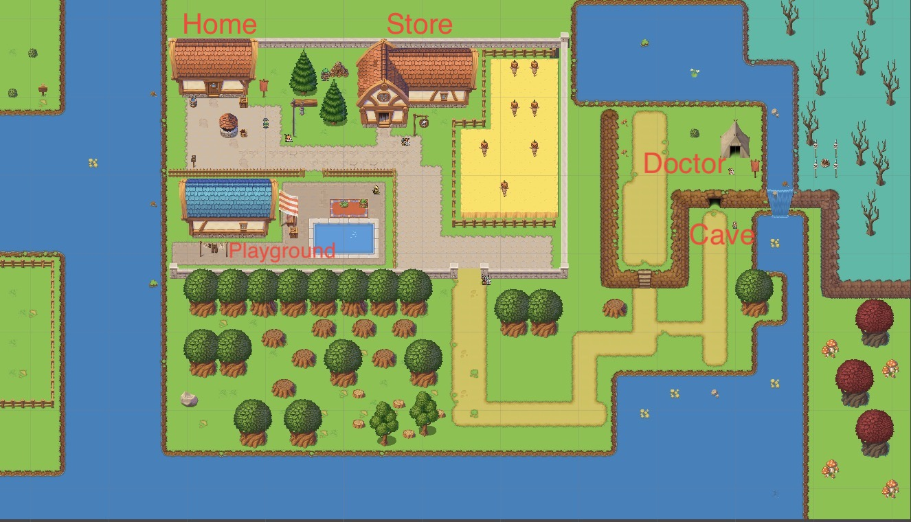

Link to github repository to download the game
Thomas is a 14-year-old boy coming of age in the town of Crystalis. All children who turn 15 in Crysstalis must choose an occupation. Thomas now has 3 weeks before he turns 15 and has to choose. Thomas has always wanted to be a knight ever since he was a kid. However, Merlin, the town chief, won't allow Thomas to officially become a knight. Thomas must now pass all of Merlin's trials or rist becoming the town's baker as a last resort
In order to become a knight, please follow Merlin's direction and complete all of his tasks.
Here is an overview of the map of game to help you explore and succeed
This game is a project for CS48 at UCSB.
CREDITS: